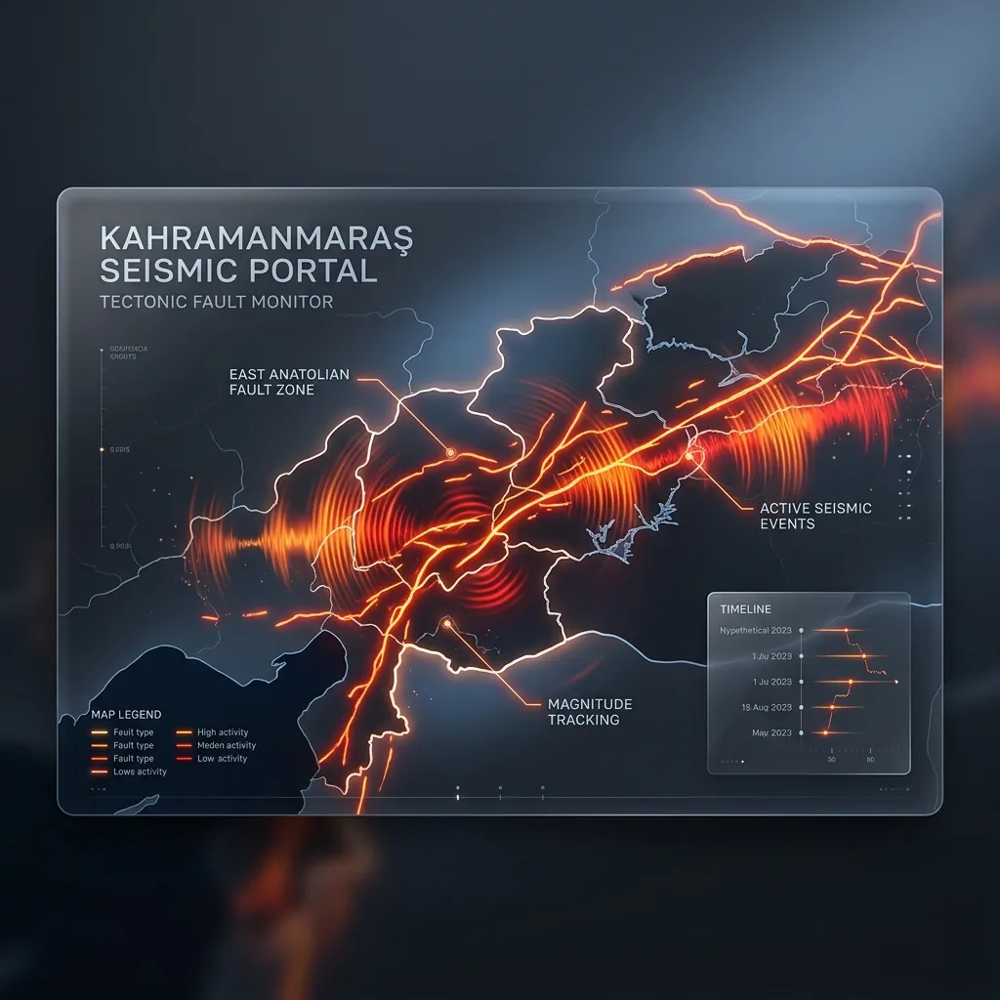

Kahramanmaraş'ta Az Önce Deprem Oldu mu?
Veriler yükleniyor...
Son Kahramanmaraş Depremleri
| Tarih/Saat | Büyüklük | Derinlik | Konum |
|---|---|---|---|
| 15.06.2026 20:42 | M3.8 | 4.9 km | YUKARIBURANDERE-PINARBASI (KAYSERI) (Kahramanmaraş) |
Kahramanmaraş Fay Segmentleri ve Bölgesel Etkiler

2023’te Pazarcık ve Elbistan merkezli olarak yaşanan ardışık depremler, Kahramanmaraş’ın Güneydoğu Anadolu, Akdeniz ve Doğu Anadolu geçişindeki konumunun neden kritik olduğunu gösterdi. Türkoğlu, Göksun ve Nurhak’ta uzanan segmentler, kırılma sırasında çevre illerde bile hissedilen şiddetli yer hareketleri üretebiliyor. Prefabrik konteyner kentlerde yaşayan binlerce kişi için düzenli zemin kontrolü yapmak, yağmur suyu drenajlarını temizlemek ve elektrik kablolarını kablo kanallarıyla izole etmek yaşamsal güvenlik sağlıyor.
Bölgede tarımla uğraşan aileler, sulama kanallarının ve baraj setlerinin deprem sonrası zarar görmesi ihtimaline karşı taşkın planları hazırlamalı. Kahramanmaraş Büyükşehir Belediyesi’nin yayımladığı mikrobölgeleme haritaları, hangi mahallelerde yumuşak zemin olduğunu ve hangi semtlerin sarsıntıyı büyüteceğini net biçimde ortaya koyuyor. Özellikle Onikişubat ve Dulkadiroğlu ilçelerinde yaşayanların, apartman yönetimleriyle acil durum iletişim zincirleri kurup jeneratör, uydu telefonu ve portatif aydınlatma gibi ekipmanları ortaklaşa edinmesi önerilir.
Kahramanmaraş Toplanma Alanları
AFAD'ın e-Devlet toplanma alanı servisi üzerinden T.C. kimlik numaranızla giriş yaparak Elbistan, Pazarcık, Türkoğlu ve merkez ilçeler için tanımlı güvenli bölgeleri görebilirsiniz. Alanları haritada favorilere ekleyin ve aile bireyleriyle paylaşın.
Kahramanmaraş Deprem Hazırlık Önerileri
- Pazarcık ve Elbistan fay segmentleri için tahliye rotalarınızı Antakya, Gaziantep ve Adana yönlerine göre iki alternatif olarak planlayın.
- Deprem çantanıza kışın sert geçtiği Afşin-Göksun hattına uygun termal kıyafet, güç bankası ve yedek iletişim kartı ekleyin.
- OSB bölgelerinde çalışanlar için işyeri ve ev adına ayrı toplanma noktaları belirleyin; mahalle afet gönüllüleriyle iletişim kurun.
- Nurdağı ve İslahiye hattındaki yakınlarınızı uyaracak aile içi mesaj zincirini telefon yerine WhatsApp topluluğu ile otomatikleştirin.
- Prefabrik konteynerlerde yaşıyorsanız soba ve tüp bağlantılarını her hafta kontrol ederek gaz kaçak dedektörü kullanın.
- Çiftçilik yapan aileler için hayvan barınaklarına ekstra su deposu kurup yem stoklarını su geçirmez kutularda saklayın.